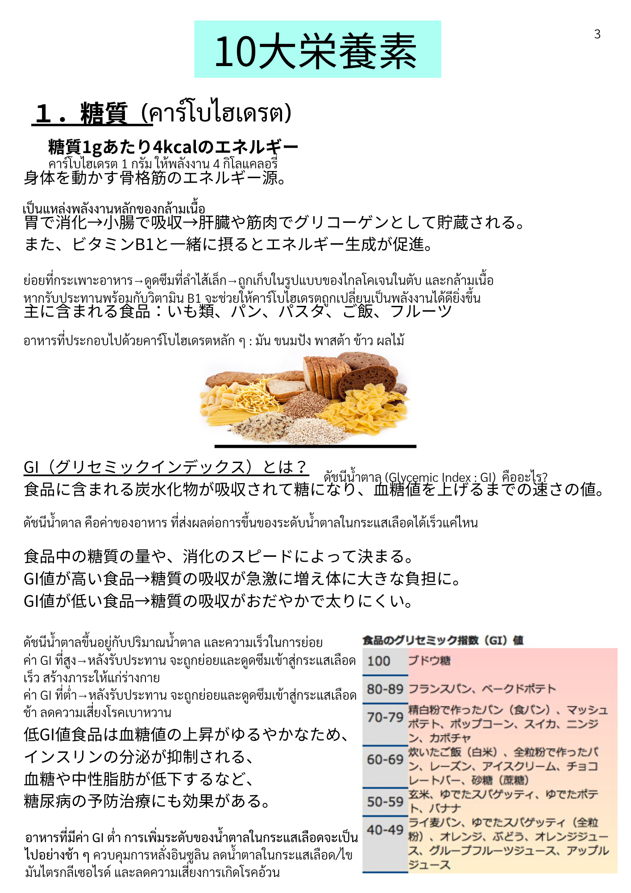

| 漢字 | ひらがな | ความหมาย (ไทย) |
|---|---|---|
| 糖質 | とうしつ | คาร์โบไฮเดรต / น้ำตาล |
| 炭水化物 | たんすいかぶつ | คาร์โบไฮเดรต |
| 栄養素 | えいようそ | สารอาหาร |
| 食品 | しょくひん | อาหาร / ผลิตภัณฑ์อาหาร |
| 主に | おもに | ส่วนใหญ่ / โดยหลัก |
| 含まれる | ふくまれる | มีอยู่ใน / ประกอบด้วย |
| 漢字 | ひらがな | ความหมาย (ไทย) |
|---|---|---|
| 身体 | からだ | ร่างกาย |
| 骨格筋 | こっかくきん | กล้ามเนื้อโครงร่าง |
| 筋肉 | きんにく | กล้ามเนื้อ |
| 胃 | い | กระเพาะอาหาร |
| 小腸 | しょうちょう | ลำไส้เล็ก |
| 肝臓 | かんぞう | ตับ |
| 漢字 | ひらがな | ความหมาย (ไทย) |
|---|---|---|
| 消化 | しょうか | การย่อยอาหาร |
| 吸収 | きゅうしゅう | การดูดซึม |
| 貯蔵 | ちょぞう | การเก็บสะสม |
| 生成 | せいせい | การสร้าง / สังเคราะห์ |
| 促進 | そくしん | การส่งเสริม / เร่ง |
| 摂る | とる | รับประทาน / บริโภค |
| 源 | みなもと | แหล่งกำเนิด / ที่มา |
| エネルギー | えねるぎー | พลังงาน |
| 漢字 | ひらがな | ความหมาย (ไทย) |
|---|---|---|
| 血糖値 | けっとうち | ระดับน้ำตาลในเลือด |
| 速さ | はやさ | ความเร็ว |
| 値 | あたい | ค่า / ตัวเลข |
| 量 | りょう | ปริมาณ |
| 急激 | きゅうげき | ฉับพลัน / รวดเร็ว |
| 上昇 | じょうしょう | การเพิ่มขึ้น |
| 低下 | ていか | การลดลง |
| 負担 | ふたん | ภาระ (ต่อร่างกาย) |
| 分泌 | ぶんぴつ | การหลั่ง (ฮอร์โมน) |
| 抑制 | よくせい | การยับยั้ง / ควบคุม |
| 漢字 | ひらがな | ความหมาย (ไทย) |
|---|---|---|
| 中性脂肪 | ちゅうせいしぼう | ไตรกลีเซอไรด์ |
| 糖尿病 | とうにょうびょう | โรคเบาหวาน |
| 予防 | よぼう | การป้องกัน |
| 効果 | こうか | ผล / ประสิทธิภาพ |
| 太る | ふとる | อ้วน / น้ำหนักขึ้น |
| 漢字 | ひらがな | ความหมาย (ไทย) |
|---|---|---|
| 芋類 | いもるい | มันชนิดต่าง ๆ (มันฝรั่ง มันเทศ ฯลฯ) |
| ご飯 | ごはん | ข้าวสวย |
| 白米 | はくまい | ข้าวขาว |
| 玄米 | げんまい | ข้าวกล้อง |
| 餅 | もち | โมจิ / ข้าวเหนียวปั้น |
| 砂糖 | さとう | น้ำตาล |